무선설비산업기사 (2004-03-07 기출문제)
1과목: 디지털 전자회로
1. 다음과 같은 회로에 정현파 입력 신호를 가했을 때 출력파형은? (단, 다이오우드 순방향 저항 Rf = 0)
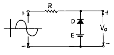
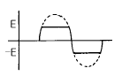
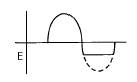
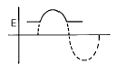
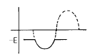
(정답률: 알수없음)

2. 다음 연산증폭회로에서 출력전압 e0 를 구하는 식은? (단, R1 = R3, R2 = R4이다.)
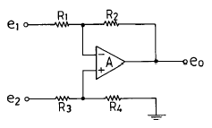
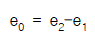
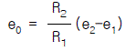
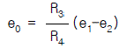
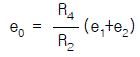
(정답률: 알수없음)
3. Flip-Flop 과 관계가 없는 것은?
- RAM
- Decoder
- Counter
- Register
(정답률: 40%)
4. 10진수 25를 2진수로 옳게 나타낸 것은?
- 10001
- 11001
- 10101
- 11000
(정답률: 알수없음)
5. 다음은 반가산기(Half Adder)의 블록도이다. 출력단자 S(sum) 및 C(carry)에 나타나는 논리식은?
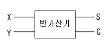
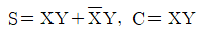
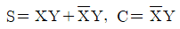
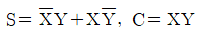
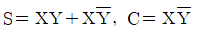
(정답률: 알수없음)
6. 전파정류회로의 최대효율은 약 몇[%]인가?
- 20
- 40
- 81
- 92
(정답률: 알수없음)
7. 동조형 공진결합 증폭기에서 대역폭 B를 넓게 하는 방법은?
- 공진회로의 용량을 증가시킨다.
- 공진회로의 Q를 낮게 한다.
- 공진회로의 저항을 감소시킨다.
- 공진회로의 인덕턴스를 증가시킨다.
(정답률: 알수없음)
8. 반송파전압 ec = Ec cos(wct + θ)를 신호전압 es = Es coswst 로 진폭변조시 피변조파의 상측파대의 진폭은? (단, ma: 변조도)
- wc + ws
- (maㆍEc)/2
- wc - ws
- maㆍEc
(정답률: 알수없음)
9. 하틀레이 발진기에서 궤환요소는?
- 용량
- 저항
- 코일
- 능동소자
(정답률: 알수없음)
10. 다알링톤(Darlington)회로의 설명으로 틀리는 것은?
- 전압 이득이 작다.
- 전류 이득이 크다.
- 입력저항이 작다.
- 출력저항이 작다.
(정답률: 알수없음)
11. 트랜지스터를 증폭작용에 이용할 경우의 동작상태는?
- 포화상태
- 활성상태
- 차단상태
- 역활성상태
(정답률: 알수없음)
12. 다음 회로의 논리 출력식으로 옳은 것은?
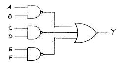
- Y = AB·CD·EF
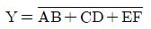
- Y = AB + CD + EF
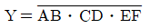
(정답률: 알수없음)
13. 다음 중 Schmitt trigger 회로의 특성으로 옳은 것은?
- 이득을 향상시킬 수 있다.
- 계단파 발진기로 주로 사용한다.
- 삼각파 입력으로 정현파 출력이 된다.
- 회로구성은 쌍안정 멀티바이브레이터와 유사하다.
(정답률: 60%)
14. 다음과 같은 논리 다이아그램을 논리식으로 표시하면 ?
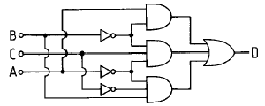
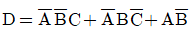
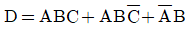
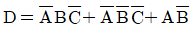
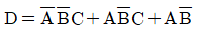
(정답률: 알수없음)
15. 다음 논리식 중 틀린 것은?
- A+0 = A
- Aㆍ0 = 0
- Aㆍ1 = 1
- A+1 = 1
(정답률: 알수없음)
16. 가청주파수 증폭기에서 부궤환 회로를 사용하는 목적을 설명한 것 중 적합하지 않은 것은?
- 왜곡(distortion)을 개선하기 위하여
- 잡음을 감소시키기 위하여
- 이득을 크게 하기 위하여
- 주파수특성을 좋게 하기 위하여
(정답률: 알수없음)
17. 다음 회로중 미분 회로는 어느 것인가?
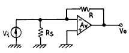
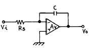
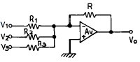
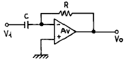
(정답률: 알수없음)
18. 2진 비교기의 구성요소를 맞게 설명한 것은?
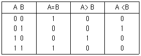
- 인버터 2개, NOR 게이트 2개, NAND 게이트 1개
- 인버터 2개, AND 게이트 1개, NOR 게이트 2개
- 인버터 2개, AND 게이트 2개, X-NOR 게이트 1개
- 인버터 2개, NAND 게이트 2개, X-OR 게이트 1개
(정답률: 알수없음)
19. 다음 논리식을 간단히 하면 ?
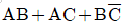
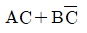
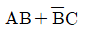
- AC+B
- AB+C
(정답률: 알수없음)
20. 트랜지스터의 콜렉터 누설전류가 주위온도의 변화로 15[㎂]에서 150[㎂]로 증가되었을 때 콜렉터 전류는 9[㎃]에서 9.5[㎃]로 변하였다. 이 트랜지스터의 안정계수 S는 약 얼마인가?
- 0.037
- 3.7
- 27
- 270
(정답률: 알수없음)
2과목: 무선통신 기기
21. 다음 AM수신기의 보조회로중 수신기의 직선성을 보호하고 출력신호 레벨을 일정하게 유지하여 통신의 질 저하를 막아주는 회로로 가장 적당한 것은?
- 자동이득조절(AGC)
- 자동선택도조절(ASC)
- 자동주파수조절(AFC)
- 자동잡음억제회로(ANL)
(정답률: 알수없음)
22. 무선송신기에 사용되는 발진기의 조건과 거리가 먼 것은?
- 고조파 발생이 많을 것
- 주파수의 미조정이 용이할 것
- 온도 변화에 발진출력이 일정할 것
- 주파수 안정도가 높을 것
(정답률: 알수없음)
23. 다음은 능동 위성통신을 위해 현재까지 제안된 방식이다. 이에 해당되지 않는 것은?
- 램덤위성방식
- 정지위성방식
- 다중위성방식
- 위상위성방식
(정답률: 알수없음)
24. 이상법에 의한 SSB송신기에 가장 적합한 이상회로는?
- 30° 이상기
- 45° 이상기
- 60° 이상기
- 90° 이상기
(정답률: 알수없음)
25. 다음은 Superheterodyne 수신기의 구성 요소이다. 어떤 순서로 구성해야 하는가?
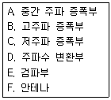
- F-B-A-E-D-C
- F-B-D-E-A-C
- F-B-D-A-E-C
- B-E-F-A-D-C
(정답률: 알수없음)
26. 고주파 회로의 측정시 측정기의 올바른 사용법이 아닌것은?
- 측정기와 측정회로는 가급적 가는선을 이용하여 결선한다.
- 사용되는 측정기의 접지단자를 접지 시킨다.
- 측정기와 측정회로 사이의 결선은 가급적 짧게하여 측정한다.
- 측정기를 차폐시킨다.
(정답률: 알수없음)
27. 이득 대역적(Gain Bandwidth Product)이 갖는 의미로서 가장 적절한 것은?
- 증폭기의 증폭 성능을 나타내며 어느정도 넓은 대역에 걸쳐 안정된 이득을 수행하는가를 의미
- 증폭기의 증폭성능을 나타내며 다음 단과 어느 정도 양호한 이득이 이루어지는가를 의미
- 발진기의 발진 성능을 나타내며 어느정도 넓은 대역에 걸쳐 안정된 발진이 가능한가를 의미
- 발진기의 발진 성능을 나타내며 어느정도 양호한 이득으로 발진을 수행하는가를 의미
(정답률: 알수없음)
28. 인버터(inverter)에 대한 설명으로 맞는 것은?
- 직류전원을 다른 크기의 직류전원으로 변환하는 장치
- 직류전압을 일정한 주파수의 교류전압으로 변환하는 장치
- 교류전압을 직류전압으로 변환하는 장치
- 교류전압을 다른 주파수와 크기를 갖는 교류전압으로 변환하는 장치
(정답률: 알수없음)
29. 실효 높이가 20m인 안테나에 0.08V의 전압이 유기 되면 이곳의 전계 강도는 얼마인가?(단, 기준 전계 강도는 1㎶/m이다.)
- 약 27dB
- 약 50dB
- 약 72dB
- 약 96dB
(정답률: 알수없음)
30. FM 검파기의 특성인 S 커브의 상태가 직선이 아니면 어떤 상태인가?
- 동조가 벗어났다.
- 출력이 적어진다.
- 복조감도가 나쁘다.
- 잡음이 감소한다.
(정답률: 알수없음)
31. 직선 검파기에서 Diagonal clipping이 발생하는 이유는?
- 직선 검파 외의 출력이 너무 커서
- 평균 검파기는 부하에 저항만 접속되어서
- 검파 회로 시정수가 너무 커서
- 직선 검파기의 출력측에는 직류 성분이 포함되어서
(정답률: 알수없음)
32. 그림은 FM수신기의 리미터 특성을 측정하기 위한 구성도와 전압계로 입력과 출력단의 전압을 측정한 경우의 E1- E2 관계특성을 보이고 있다. 리미터의 적합한 특성은?
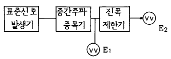
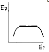
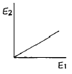
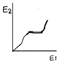
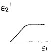
(정답률: 알수없음)
33. FM 방송파의 최대 주파수 편이가 50[㎑]이고 변조신호 주파수가 10[㎑]일때 변조지수는?
- 50
- 25
- 5
- 2.5
(정답률: 알수없음)
34. 무선 수신기에서 희망 수신 주파수에 근접한 강한 주파수가 존재할 경우 이를 줄이기 위한 대책으로 가장 적합한 것은?
- 중간주파 증폭기의 통과 대역폭을 좁힘
- 고주파 증폭기의 이득을 높임
- 고주파 증폭기의 통과 대역을 넓힘
- 중간주파 증폭기의 통과 대역폭을 넓힘
(정답률: 50%)
35. 전력 증폭기의 직류 공급 전력은 12[V], 400[mA]이고, 효율은 60[%]일때 부하에서의 출력 전력은?
- 0.7 [W]
- 1.44 [W]
- 2.88 [W]
- 4.8 [W]
(정답률: 알수없음)
36. 중화회로에 관한 설명 중 틀린 것은?
- 기생진동을 방지한다.
- 자기발진을 방지한다.
- 회로소자를 단일방향화 하는 회로이다.
- 부궤환 회로방식을 이용한 것이다.
(정답률: 알수없음)
37. maser의 설명중 옳게 표현되지 못한것은?
- Micro파 증폭에 쓰이는 maser는 루비를 사용한 고체 3준위 maser가 많다.
- 물질에 의하여 고유한 주파수를 가지고 있으므로 모든 발진 주파수들을 증폭할수 없다.
- 자계억제 회로가 필요하다.
- 전자스핀의 에너지 준위 사이의 전이를 이용한다.
(정답률: 알수없음)
38. 위상변조(PM)를 등가 주파수 변조(FM)로 만들기 위하여 사용되는 회로는?
- pre-emphasis 회로
- De-emphasis 회로
- pre-distorter 회로
- IDC 회로
(정답률: 알수없음)
39. 다음중 변조의 필요성에 해당되지 않은 것은?
- 전송채널에서 간섭과 잡음을 줄이기 위함이다.
- 다중통신을 하기 위함이다.
- 원거리 통신을 하기 위함이다.
- 좀더 긴파장의 신호를 만들기 위함이다.
(정답률: 알수없음)
40. 통신위성시스템은 크게 패이로드 시스템과 버스 시스템으로 구성된다. 버스 시스템에 해당되지 않는 것은?
- 자세궤도제어 시스템
- 추진 시스템
- 전원공급 시스템
- 안테나 시스템
(정답률: 알수없음)
3과목: 안테나 개론
41. 자유공간(유전율 = εo,투자율 = μo)을 속도 V[m/s]로 전파하는 전자파 E[V/m]및 H[A/m]가 있다. 전계 및 자계간의 관계식은?
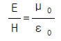
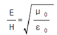
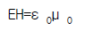
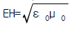
(정답률: 알수없음)
42. 다음 각 안테나의 실효고를 잘못 나타낸 것은?
- λ/4 수직접지 안테나 he=λ/2π
- 반파장 다이폴 안테나 he=λ/π
- 루프(Loop)안테나 he=(2π NA)/λ
- 역L형 접지안테나 he=λ/2π sin π/3λ
(정답률: 알수없음)
43. 송, 수신 안테나 길이가 각각 1m일때 직접파의 통달거리는?
- 8.22(㎞)
- 4.11(㎞)
- 3.57(㎞)
- 7.14(㎞)
(정답률: 알수없음)
44. 무손실 등방성 안테나의 상대이득은?
- 1
- 0
- 1/1.64
- 1.64
(정답률: 알수없음)
45. 길이 30[m]의 λ/4수직 접지안테나의 고유파장과 고유주파수는 얼마인가?
- λ : 120[m], f : 2.5[MHz]
- λ : 80[m] , f : 3.75[MHz]
- λ : 120[m], f : 7.5[MHz]
- λ : 80[m] , f : 2.5[MHz]
(정답률: 60%)
46. 안테나와 송신기와의 거리가 멀리 떨어져 있을 때 사용하는 급전선으로 가장 타당한 것은?
- 평행 2선식
- 평행4선식
- 동축 케이블식
- 동조형 급전선식
(정답률: 알수없음)
47. 다음중 진행파 안테나에 해당되지 않는 것은?
- 롬빅 안테나
- 비버리지 안테나
- 반파다이폴 안테나
- 진행파 V형 안테나
(정답률: 알수없음)
48. 지구의 실제반경을 r, 등가지구반경을 R, 등가지구 반경계수를 K라고 할 때, 이들은 어떤 관계식을 갖는가?
- R=Kr
- R=Kr2
- R=r/K
- R=K2r2
(정답률: 알수없음)
49. 특성 임피이던스가 50[Ω]인 선로에 부하를 걸어줄 때 전압 정재파의 실효치의 최대치는 50[V] 최소치가 20[V]이다. 정재파비는 얼마인가?
- 0.4
- 5
- 6.25
- 2.5
(정답률: 알수없음)
50. λ /4 수직접지 Antenna 의 전류가 5[A]일 때 30[㎞] 지점에서 생기는 전계강도는 얼마인가?(단, 주파수를 1[㎒]라고 한다.)
- 1.2[㎷/m]
- 2.5[㎷/m]
- 5.0[㎷/m]
- 10[㎷/m]
(정답률: 알수없음)
51. 다음중 지상파에 의한 마이크로파(micro wave)통신이 갖고 있는 단점은?
- 광대역 통신이 불가능하다.
- 외부 잡음의 영향을 많이 받는다.
- 다중통신이 불가능하다.
- 중계소를 많이 설치해야 한다.
(정답률: 알수없음)
52. 등방성 안테나의 입력전력을 Po 라고 한다면 안테나에서r(m) 되는 점의 전계강도 Eo는 얼마인가?
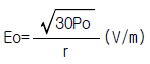
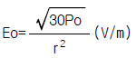
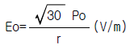
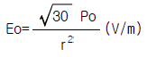
(정답률: 알수없음)
53. 다음중 델린저 현상과 관계 없는 사항은?
- 태양의 방사표면에서 돌연 자외선이 증가하여 이 현상이 발생한다.
- 이 현상이 발생하면 최소한 2 - 3일 정도 통신을 못한다.
- 출현주기는 빈번하며 보통 27일(자전주기)발생 주기로 주기성이 있는 것으로 믿어왔으나 명확한 주기성은 없다.
- D 또는 E층의 전자밀도가 증가한다.
(정답률: 알수없음)
54. 접지안테나의 복사저항은 40.6[Ω]이고, 접지저항은 4.4[Ω]이라면 이 안테나의 효율은 얼마인가?
- 10.8[%]
- 63.7[%]
- 75.4[%]
- 90.2[%]
(정답률: 알수없음)
55. 파라보라안테나의 유효개구면적 Aeff와 절대이득 Ga 와의 관계식은?
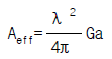
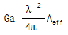
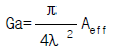
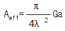
(정답률: 알수없음)
56. 야기(Yagi)안테나의 설명으로서 틀린 것은?
- 단향성의 예민한 지향특성을 갖는다.
- 반사기(reflector)의 길이는 반파장 이상이다.
- 도파기(director)의 길이는 반파장보다 짧다.
- 각 소자의 간격은 λ/4 보다 크다.
(정답률: 72%)
57. 전리층의 굴절률을 나타내는 식은? (단, N:전자밀도 [개/m3] , h':전리층의 겉보기높이[m] f:주파수[㎐] 이다.)
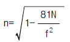
(정답률: 알수없음)
58. 다음 중 잘못된 것은?
- 동축 케이블은 불평형형이고 외부도체는 접지한다.
- 평행 2선식은 folded dipole과 직접 연결하여 사용할 수 있다.
- 동축 케이블은 평행 2선식보다 높은 주파수를 사용할 수 있다.
- 평행 2선식 급전선의 특성 임피던스는 Zo = 277 log10 (D/2d)[Ω]이다. (D는 간격, d는 선로의 직경이다.)
(정답률: 알수없음)
59. 다음중 공전잡음이 아닌것은?
- Hissing
- Click
- Grinder
- Outbrust
(정답률: 알수없음)
60. 비유전울εs = 4,비투자율 us = 1인 유리에서의 전자파의 속도 V는 빛의 속도 C 의 몇배인가?
- 2배
- 3배
- 1/2배
- 4배
(정답률: 알수없음)
4과목: 전자계산기 일반 및 무선설비기준
61. 다음 중 Unary 연산이 아닌 것은?
- move
- logical shift
- complement
- NAND
(정답률: 알수없음)
62. 다음중 무선설비규칙에 의한 안전시설은?
- 암호화기
- 테스터기
- 유도선륜
- 접지장치
(정답률: 알수없음)
63. 주파수 할당시 공고 사항이 아닌 것은?
- 할당대상 주파수 및 대역폭
- 할당방법 및 출력의 세기
- 주파수할당 대가의 산출기준
- 주파수용도 및 기술방식에 관한 사항
(정답률: 알수없음)
64. 송신장치의 모든 전력으로 시험할 수 있는 의사공중선을 비치하여야 하는 무선국은?
- 해안국
- 항공기국
- 기지국
- 의무선박국
(정답률: 알수없음)
65. 다음중 정보통신기기인증규칙에 의하여 형식등록을 하여야 하는 무선설비는?
- 선박용 레이더
- GMDSS설비
- 기상원조용 라디오존데
- 경보자동수신기
(정답률: 알수없음)
66. 산업용 전파응용설비의 전계강도의 허용치는 몇 미터 거리에서 1미터마다 100㎶/m 이하이어야 하는가?
- 10미터
- 50미터
- 100미터
- 200미터
(정답률: 알수없음)
67. 64비트 마이크로프로세서에서 데이터 버스(databus)는 몇 개의 선으로 구성되어 있는가?
- 8개
- 16개
- 64개
- 128개
(정답률: 알수없음)
68. 마이크로 컴퓨터에서 각 구성 요소간의 데이터 전송에 사용되는 공통의 전송로는?
- BUS
- CHANNEL
- LINE
- INTERFACE
(정답률: 알수없음)
69. 다음 중 어느 것에서 직접 연산이 수행되는가?
- 누산기
- 레지스터
- 감산기
- 가산기
(정답률: 알수없음)
70. 다음 중 가장 저급 수준의 프로그램 언어는?
- Assembly 어
- FORTRAN
- COBOL
- C
(정답률: 알수없음)
71. 아마추어국에서 송신설비의 공중선전력에 대한 상한허용 편차는?
- 10[%]
- 20[%]
- 30[%]
- 50[%]
(정답률: 알수없음)
72. 서브루틴의 호출에 이용되는 자료구조는?
- 배열(array)
- 스택(stack)
- 레코드(record)
- 큐(queue)
(정답률: 알수없음)
73. 2진수 1001의 1의 보수에 해당하는 것은?
- 0001
- 0110
- 0111
- 0101
(정답률: 알수없음)
74. 전자파 적합등록 대상기기에서 제외될 수 있는 것은?
- 방송수신기기
- 불꽃점화 엔진구동기기
- 가정용 전기기기
- 전시용 고전압설비
(정답률: 알수없음)
75. 사용자(end user)가 작성한 프로그램을 무엇이라 하는가?
- 원시 프로그램(source program)
- 컴파일러(compiler)
- 언어 번역 프로그램(language translator)
- 목적 프로그램(object program)
(정답률: 알수없음)
76. C3F, F3E , G3E전파의 텔레비젼 방송국의 무선설비로서의 점유주파수 대역폭의 허용치는?
- 16[kHz]
- 5[kHz]
- 6[MHz]
- 27[MHz]
(정답률: 알수없음)
77. 전파법의 목적이 아닌 것은?
- 전파의 효율적인 이용 및 관리 등에 관한 사항 규정
- 전파이용기술 개발의 촉진
- 전파자원의 균등한 분배 및 이용 보장
- 전파진흥 및 공공복리 증진에 이바지
(정답률: 50%)
78. 디지털 컴퓨터에 대한 설명이 아닌 것은?
- 모든 데이터들을 이산적인 숫자 형태로 표현된다.
- 사칙 연산 및 논리연산을 수행한다.
- 모든 동작은 프로그램에 의하여 수행된다.
- 회로는 미분, 적분, 가산회로 및 릴레이로 구성된다.
(정답률: 알수없음)
79. 다음의 오퍼랜드 어드레스 방식 중에서 기억장치를 두번 읽어야 원하는 데이터를 얻을 수 있는 방식?
- 간접 어드레스 지정방식(indirect addressingmode)
- 직접 어드레스 지정방식(direct addressing mode)
- 상대 어드레스 지정방식(relative addressingmode)
- 페이지 어드레스 방식(page addressing mode)
(정답률: 알수없음)
80. 다음 중 첨두포락선전력은 무엇으로 표시하는가?
- PY
- PX
- PZ
- PR
(정답률: 60%)